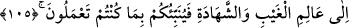

Ve Allah, tevbeyi çok kabul eden, çok esirgeyendir.
O tevbe edenler “bilmediler mi ki,” tevbe konusunda samîmî olan “kullarından”
doğru ve samîmî olarak yapılan “tevbeyi kabul eden,” onların günahlarından geçip
bağışlayan, bütün “sadakaları” onların ve başkalarının sadakalarını “alan Allahtır.”
Haddâdî, “Tevbenin kabul edilmesi, zorunlu olarak ona sevap verileceğini gösterir.”
demiştir.
Allah’ın onların sadakalarını almasından maksad, Hz. Peygamber (a.s.)’ın ve ondan
sonra gelen idarecilerin almasıdır. Çünkü onların alması ancak Allah’ın emriyle olur.
Bu durumda gerçekte alan Allah demektir. Beydâvî demiştir ki: Allah, sadakaları, bir
şeyin bedelini vermek üzere alan kimsenin kabul etmesi gibi kabul eder. Burada istiâre-
i tebeiyye vardır. Çünkü gerçekte sadakayı alan, tayin ettiği kimse değil, Rasûl (a.s.)’ın
kendisidir.
“Sadaka” kelimesi: hem farz olan (zekata), hem de nâfile olan için kullanılır. Fethu’l-
karîb’de belirtildiği üzere halkın dilinde daha çok hayvandan alınan farza (zekâta)
“sadaka”, bitkilerden alınana “öşür”, nakitlerden alınana da “zekat” isminin verilmesi
yaygın olmuştur.
“Ve Allah, tevbeyi çok kabul eden,” tevbe eden kimseyi bağışlar. O, kendisine
itaatten çıkmamak üzere günahından dönen her günahkara, ihsan ve ikramı ile mukabele
eder.
et-Te’vîlâtü’n-Necmiyye’de şöyle denilmiştir: “O, tevbeyi çok kabul edendir.” Lütuf
ve keremi ile kulu tevbeye muvaffak kılan O’dur. O’nun muvaffak kılması olmasa hiçbir
günahkar asla tevbe edemez. Nitekim O’nun tevfîki olmadığı için İblîs tevbe edemez.
Mesnevî’de denir ki:
Allah’ın lütfu ve inayetinden başka kim açabilir gözleri?
Hakk’ın sevgisinden başka kim yatıştırabilir öfkeyi?
Dünyada başarısız gayrete kimse düşmesin
Doğruyu en iyi Allah bilir
Allah tevbe üzere ölen kimseyi “çok esirgeyendir.” Allah’ın kullarına rahmeti, onlara
ihsan ve ikramda bulunmayı murad etmesi, onlardan zararı men etmesi demektir.
“Bilmediler mi” ifadesindeki zamirle, tevbe etmeyen müminlerin kastedilmiş olması
da mümkündür. Bu takdirde âyet, günahkarları tevbe etmeye ve sadaka vermeye teşvik
etmektedir.